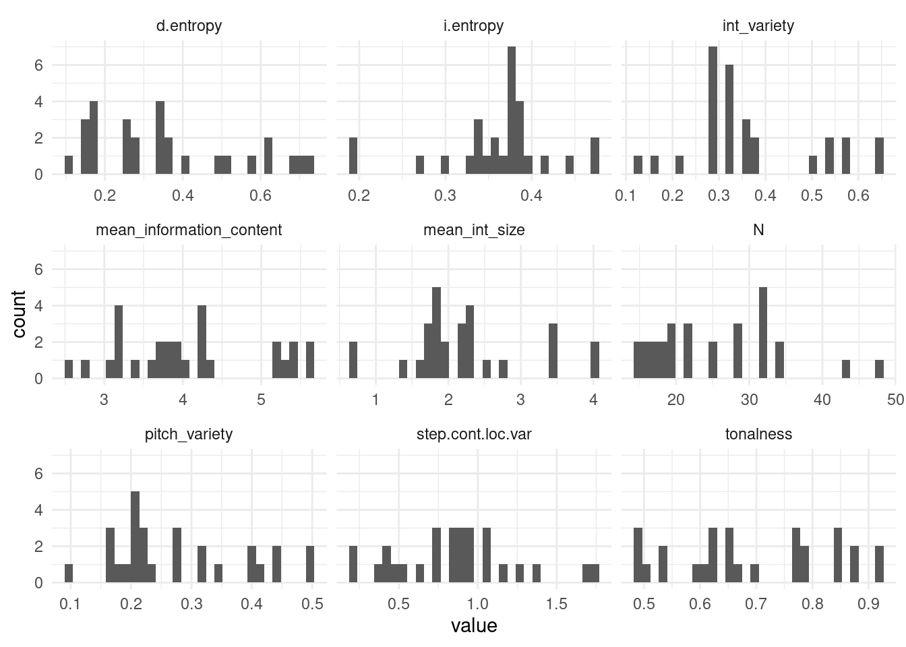

The following are supplementary materials for:
Silas, S., & Müllensiefen, D. (2023). Learning and recalling melodies: A computational investigation using the melodic recall paradigm. Music Perception.
Short melodic excerpts from pop songs used as materials in the study
| 1 |
Children Of The Night |
R. Marx |
Pop 4/4 |
75 |
| 2 |
Climb Up |
N. Sedaka |
R´n´R 4/4 |
120 |
| 3 |
Cold Cold Heart |
M. Pellow |
Pop 4/4 |
80 |
| 4 |
Do You Want To Dance? |
R. Freeman |
R´n´R 4/4 |
100 |
| 5 |
Du gehörst zu mir |
J. Heider |
Schlager 4/4 |
120 |
| 6 |
Longer |
D. Fogelberg |
Pop-Ballade 4/4 |
80 |
| 7 |
Oh Carol |
N. Sedaka |
Pop-Ballade 4/4 |
140 |
| 8 |
Take Good Care |
C. King |
Ballade 4/4 |
120 |
| 9 |
The Sky Is Crying |
M. Levy |
Blues 12/8 |
60 |
| 10 |
You Are My Destiny |
P. Anka |
Schlager 12/8 |
85 |
| 11 |
Goodbye My Love Goodbye |
M. Panas / D. Roussos |
Schlager 4/4 |
114 |
| 12 |
Enjoy Your Life |
Funky Be |
HipHop 4/4 |
85 |
| 13 |
Love Is Like A Rainbow |
T. Anders |
Disco-Pop 4/4 |
155 |
| 14 |
Let Me Be Your Only One |
Funky Be |
HipHop 4/4 |
100 |
An example of one melody from each pop song.
Melody No. 1, Children of the Night, R.Marx

Melody No. 2, Climb Up, N.Sedaka

Melody No. 3, Cold Cold Heart, M.Pellow
2.1.4: Melody No. 4, Do You Want To Dance?, R. Freeman

Melody No. 5, Du gehörst zu mir, J. Heider

Melody No. 6, Longer, D.Fogelberg
Melody No. 7, Oh Carol, N. Sedaka

Melody No. 8, Take Good Care, C. King

Melody No. 9, The Sky is Crying, M.Levy

Melody No. 10, You Are My Destiny, P. Anka

Melody No. 11, Goodbye My Love Goodbye, M. Panas / D. Roussos

Melody No. 12, Enjoy Your Life, Funky Be
Melody No. 13, Love Is Like A Rainbow, T. Anders
Melody No. 14, Let Me Be Your Only One, Funky Be

Description and distribution of melodic features

Melodic feature summary statistics
Table 2.1: Melodic feature summary statistics. Note, some are not used in our modelling, but are here to show other properties of the melodies.
| d.entropy |
0.36 |
0.19 |
0.53 |
| step.cont.loc.var |
0.86 |
0.38 |
0.44 |
| pitch.variety |
0.28 |
0.11 |
0.40 |
| mean.int.size |
2.21 |
0.84 |
0.38 |
| int.variety |
0.37 |
0.13 |
0.37 |
| N |
25.39 |
8.66 |
0.34 |
| mean.information.content |
4.07 |
0.89 |
0.22 |
| tonalness |
0.69 |
0.14 |
0.20 |
| i.entropy |
0.36 |
0.06 |
0.18 |
Questionnaire items
| chorusin |
Do you sing in a choir? |
Yes/No |
| singinstr: |
Have you ever received singing instructions? |
Yes/No |
| yearsins |
For how many years have you been playing an instrument or making music? |
__years |
| musmakpa |
During your most active musical phase how many hours per week did you make music (practice+rehearsal+gigs+lessons+playing+etc.) |
__hours/week |
| paidless |
For how many months have you received paid instrumental or singing lessons? |
__ months |
| paidgigs |
How many gigs have you played that you have been paid for? |
___gigs |
| gigs |
Overall, how many gigs have you played in front of an audience in your life? |
___gigs |
Factor loadings for mixed type variables based on questionnaire items
| chorusin |
0.70 |
0.49 |
0.51 |
| singinstr |
0.46 |
0.21 |
0.79 |
| yearsins |
0.82 |
0.67 |
0.33 |
| musmakpa |
0.77 |
0.59 |
0.41 |
| paidless |
0.65 |
0.42 |
0.58 |
| paidgigs |
0.66 |
0.44 |
0.56 |
| gigs |
0.69 |
0.48 |
0.52 |
Average by-participant development of attempt length
Average by-participant development of opti3
Another way of visualising differences in performance is at the level of participant, coloured and ordered by level of musical experience. This is useful since it invokes no false dichotimisations and preserves the actual unit of participant (however, note that participant-level effects are captured by our mixed effects models).
As shown in Figure 2, participants seem to have vastly different slopes. The bottom right, lighter blue, higher musical experience participants (e.g., VP5, VP7, VP30, VP12, VP17, VP24, VP2) seem to have steeper slopes than the lower musical experience participants in the top left, darker coloured (VP14, VP28, VP21), suggesting that higher musical experience is related to quicker learning. However, note that this pattern is not the same for everyone e.g., VP22 has a steep slope, but scores low on musical experience

Average by-melody development of attempt length

Average by-melody development of opti3
Melody SA_B appears to be the easiest melody to recall (mean opti3 across all trials = 0.61), whereas MF_B appears most difficult to recall (mean opti3 across all trials = 0.11). This shows that there can be substantial variation in the difficulty of each melody.

Linear vs. Non-Linear Models of dependent variables
We proceed by using the log attempt as numeric predictor, owing to the observed non-linearities in both opti3 and attempt length across attempt. A comparison of linear vs non-linear models is shown below.
Linear model of attempt length across repeated attempts
Table 6.1: A linear model of attempt length regressed onto attempt with melody item, participant and the interaction between melody item and participant as random effects. Note that the linear model is not taken forward.
| Intercept |
13.72 |
[11.12, 16.32] |
10.34 |
38.29 |
< .001 |
| Attempt2 |
3.26 |
[2.59, 3.92] |
9.63 |
1449.39 |
< .001 |
| Attempt3 |
4.54 |
[3.88, 5.20] |
13.45 |
1452.67 |
< .001 |
| Attempt4 |
5.58 |
[4.91, 6.25] |
16.30 |
1457.44 |
< .001 |
| Attempt5 |
6.10 |
[5.43, 6.78] |
17.62 |
1458.23 |
< .001 |
| Attempt6 |
6.74 |
[6.04, 7.43] |
19.01 |
1458.66 |
< .001 |
Figure 6 shows that the use of the log attempt as predictor is justified, capturing the systematic non-linear pattern generally well.
Linear model of mean similarity scores (opti3) across repeated attempts
Table 6.2:
| Intercept |
0.22 |
[0.17, 0.27] |
7.96 |
44.96 |
< .001 |
| Attempt2 |
0.05 |
[0.03, 0.06] |
5.02 |
1441.05 |
< .001 |
| Attempt3 |
0.07 |
[0.05, 0.09] |
7.36 |
1444.00 |
< .001 |
| Attempt4 |
0.10 |
[0.08, 0.12] |
10.58 |
1448.03 |
< .001 |
| Attempt5 |
0.12 |
[0.10, 0.14] |
12.47 |
1448.89 |
< .001 |
| Attempt6 |
0.13 |
[0.11, 0.15] |
13.23 |
1449.24 |
< .001 |
Diagnostic statistics for models with all features in (partial R-squared and variance inflation factor values)
With attempt length as dependent variable
Table 7.1: Variation inflation factor (VIF) values for model with all features in and attempt length as dependent variable
| condition |
1.63 |
| log(attempt_numeric) |
1.00 |
| N |
4.59 |
| tonalness |
2.22 |
| i.entropy |
4.50 |
| step.cont.loc.var |
5.46 |
| d.entropy |
1.84 |
| mean_information_content |
4.58 |
Table 7.2: Partial R-Squared values for model with all features in and attempt length as dependent variable
| Model |
188.68 |
8.00 |
1,763.00 |
1,509.42 |
0.46 |
0.49 |
0.43 |
| log(attempt_numeric) |
203.38 |
1.00 |
1,763.00 |
203.38 |
0.10 |
0.13 |
0.08 |
| N |
93.27 |
1.00 |
1,763.00 |
93.27 |
0.05 |
0.07 |
0.03 |
| conditionS |
84.95 |
1.00 |
1,763.00 |
84.95 |
0.05 |
0.07 |
0.03 |
| tonalness |
72.84 |
1.00 |
1,763.00 |
72.84 |
0.04 |
0.06 |
0.02 |
| d.entropy |
62.88 |
1.00 |
1,763.00 |
62.88 |
0.03 |
0.05 |
0.02 |
| step.cont.loc.var |
32.40 |
1.00 |
1,763.00 |
32.40 |
0.02 |
0.03 |
0.01 |
| mean_information_content |
0.57 |
1.00 |
1,763.00 |
0.57 |
0.00 |
0.00 |
0.00 |
| i.entropy |
0.02 |
1.00 |
1,763.00 |
0.02 |
0.00 |
0.00 |
0.00 |
With opti3 as dependent variable
Table 7.3: Variation inflation factor (VIF) values for model with all features in and opti3 as dependent variable
| condition |
1.58 |
| log(attempt_numeric) |
1.00 |
| N |
4.58 |
| tonalness |
2.19 |
| i.entropy |
4.46 |
| step.cont.loc.var |
5.45 |
| d.entropy |
1.78 |
| mean_information_content |
4.57 |
Table 7.4: Partial R-Squared values for model with all features in and opti3 as dependent variable
| Model |
42.54 |
8.00 |
1,758.00 |
340.36 |
0.16 |
0.20 |
0.14 |
| mean_information_content |
139.38 |
1.00 |
1,758.00 |
139.38 |
0.07 |
0.10 |
0.05 |
| log(attempt_numeric) |
86.68 |
1.00 |
1,758.00 |
86.68 |
0.05 |
0.07 |
0.03 |
| i.entropy |
78.48 |
1.00 |
1,758.00 |
78.48 |
0.04 |
0.06 |
0.03 |
| conditionS |
72.03 |
1.00 |
1,758.00 |
72.03 |
0.04 |
0.06 |
0.02 |
| N |
35.68 |
1.00 |
1,758.00 |
35.68 |
0.02 |
0.03 |
0.01 |
| step.cont.loc.var |
2.26 |
1.00 |
1,758.00 |
2.26 |
0.00 |
0.01 |
0.00 |
| d.entropy |
0.44 |
1.00 |
1,758.00 |
0.44 |
0.00 |
0.00 |
0.00 |
| tonalness |
0.00 |
1.00 |
1,758.00 |
0.00 |
0.00 |
0.00 |
0.00 |
Counts of overall number of trials that participants utilise for multiple attempts

To assess whether the change across attempts depended on musical experience, we fitted a mixed effects model with trial count as the dependent variable, participant as random effect and the following fixed effects: linear terms for attempt and musical experience; an additional quadratic term for attempt; a linear interaction term for attempt and musical experience; and a quadratic interaction interaction term for musical experience. The model is presented below.
Table 8.1: Model of trial counts as a function of attempt number, musical experience and interactions
| Intercept |
11.51 |
[10.24, 12.78] |
17.75 |
131.19 |
< .001 |
| Attempt numeric |
1.27 |
[0.48, 2.07] |
3.13 |
111 |
.002 |
| Iattempt numeric^2 |
-0.21 |
[-0.32, -0.10] |
-3.67 |
111 |
< .001 |
| Musical experience |
-0.51 |
[-2.32, 1.29] |
-0.56 |
131.19 |
.579 |
| Attempt numeric \(\times\) Musical experience |
0.40 |
[-0.73, 1.54] |
0.70 |
111 |
.486 |
| Iattempt numeric^2 \(\times\) Musical experience |
-0.07 |
[-0.23, 0.09] |
-0.91 |
111 |
.366 |
Statistical models to support changes in similarity as a function of attempt and melody section
opti3
Table 9.1: Change in opti3 as a function of log attempt and section of sung recall (beginning, middle, end)
| Intercept |
0.09 |
[0.09, 0.10] |
115.14 |
133727 |
< .001 |
| Melody sectionopti3 prim |
0.02 |
[0.02, 0.02] |
24.11 |
133727 |
< .001 |
| Melody sectionopti3 rec |
0.00 |
[-0.01, 0.00] |
-5.12 |
133727 |
< .001 |
| Logattempt |
0.02 |
[0.02, 0.02] |
36.15 |
133727 |
< .001 |
ngrukkon
Table 9.2: Change in ngrukkon as a function of log attempt and section of sung recall (beginning, middle, end)
| Intercept |
0.06 |
[0.06, 0.06] |
66.75 |
133727 |
< .001 |
| Melody section nngrukkon prim |
0.03 |
[0.03, 0.03] |
37.07 |
133727 |
< .001 |
| Melody section nngrukkon rec |
0.00 |
[0.00, 0.00] |
0.00 |
133727 |
.997 |
| Logattempt |
0.03 |
[0.03, 0.03] |
52.09 |
133727 |
< .001 |
rhythfuzz
Table 9.3: Change in rhythfuzz as a function of log attempt and section of sung recall (beginning, middle, end)
| Intercept |
0.22 |
[0.21, 0.22] |
391.50 |
142691 |
< .001 |
| Melody section rrhythfuzz prim |
0.00 |
[0.00, 0.00] |
-5.17 |
142691 |
< .001 |
| Melody section rrhythfuzz rec |
-0.01 |
[-0.01, -0.01] |
-13.43 |
142691 |
< .001 |
| Logattempt |
0.03 |
[0.03, 0.03] |
83.45 |
142691 |
< .001 |
harmcore
Table 9.4: Change in harmcore as a function of log attempt and section of sung recall (beginning, middle, end)
| Intercept |
0.36 |
[0.35, 0.36] |
134.19 |
142691 |
< .001 |
| Melody section hharmcore prim |
0.03 |
[0.02, 0.03] |
11.24 |
142691 |
< .001 |
| Melody section hharmcore rec |
0.00 |
[0.00, 0.01] |
0.13 |
142691 |
.899 |
| Logattempt |
0.02 |
[0.01, 0.02] |
9.54 |
142691 |
< .001 |